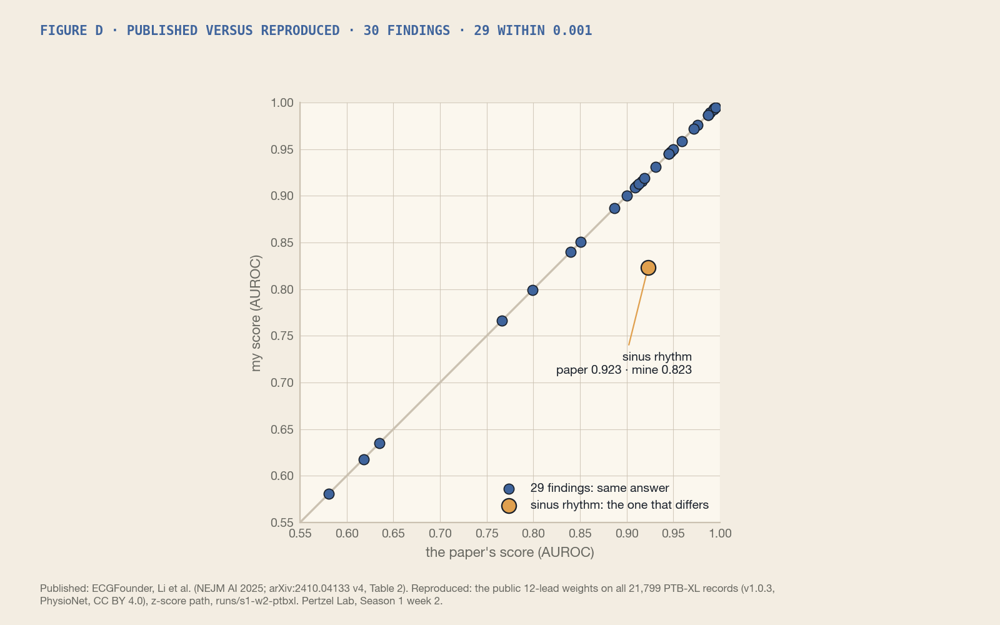
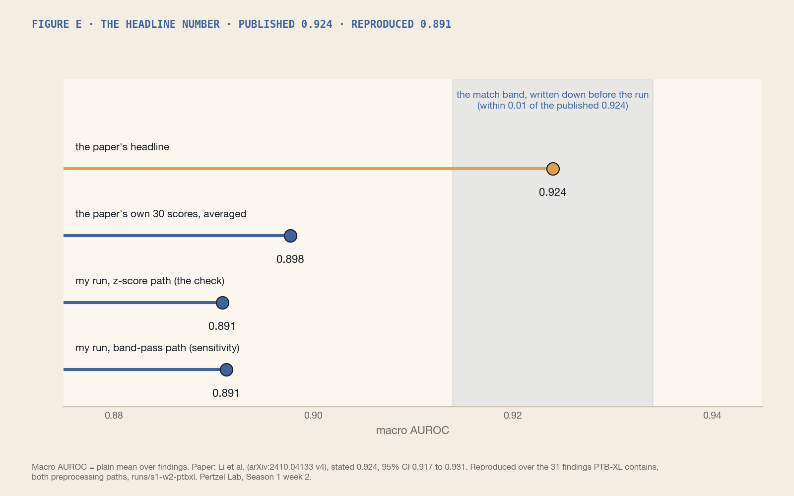

Pertzel Lab · Season 1 · Week 2
I checked a published AI number. Finding by finding it held. The headline didn't.
Week 2 of the lab, and the first real test: checking someone else's number. The paper behind ECGFounder, an open AI model trained on ten million ECGs, reports a score of 0.924 on PTB-XL, a public set of 21,799 hospital heart recordings, each one read by cardiologists. The model is free, the recordings are free, and the authors publish the file that says which findings each recording has. So I ran the same model on the same recordings, on my laptop, and compared.
Before running anything I wrote down what would count as a match: within 0.01 of 0.924. Then, before scoring anything, I wrote down which findings the average would cover. That way I couldn't move the goalposts afterwards, and anyone can check that I didn't.
A word on the score, because everything turns on it. For each finding a cardiologist might note, like atrial fibrillation or a slow rhythm, the AI gives every recording a probability. Take one recording that has the finding and one that doesn't: does the AI rate the first one higher? Over every such pair, how often does it get the order right? That is the score. 0.5 is a coin toss, 1.0 is perfect, and 0.924 means the right order about 92 times in 100. It is not "92% accurate": it says nothing about where the AI draws its yes-or-no line. Its technical name is AUROC; the paper gives one per finding and averages them.

Finding by finding, the paper holds. Of the 30 scores in its PTB-XL table, 29 match mine to three decimal places. That is not luck; it means the weights, the preprocessing and the label file I used are the ones behind their table. The one that doesn't match is sinus rhythm, the normal heartbeat: the paper says 0.923, I get 0.823, exactly 0.100 apart. I checked that the label is exactly PTB-XL's sinus-rhythm statement on every record, and that no other output of the model scores 0.923 against it. Everything else agrees, so a typo in the table is the simplest explanation. I've asked.

The headline doesn't add up. The paper's summary says 0.924. Average the 30 scores in the paper's own table and you get 0.898. My run gives 0.891. I tried every way of averaging I could think of, plain, weighted by how common each finding is, the median, dropping the rare ones, dropping the weak ones, and none of them reaches 0.924. So the check I set myself came out outside the band, by 0.033, and the reason is the summary number, not the model. Under the rule I froze, that is a documented gap, not a failed replication, and not a reason to re-run anything.
| What | Score | Label |
|---|---|---|
| Average stated in the paper | 0.924 | published (95% CI 0.917 to 0.931) |
| The paper's own 30 per-finding scores, averaged | 0.898 | published, plain mean of the table |
| My run, the paper's 30 findings | 0.894 | reproduced |
| My run, all 31 findings PTB-XL contains | 0.891 | reproduced, the check (bootstrap 95% 0.888 to 0.894) |
| My run with the README's filtering step | 0.891 | reproduced, sensitivity |
One more thing the paper skips. The authors' README says a filtering step is mandatory before using the model: notch out the mains hum, drop the slow wander and the fast noise. Their evaluation script doesn't do it, and their published table clearly came from the script, because that is the path that matches. So I ran it both ways. With the filtering on, the average moves by 0.0004, nothing. But single findings move: inferior infarct and first-degree AV block gain about 0.03, QT lengthening loses 0.034. Same model, same data, different per-finding answers, depending on an instruction the paper doesn't mention. Small print changes answers.
On Wednesday I emailed the corresponding author with three questions: which findings and which average produced 0.924; whether the sinus-rhythm row is a typo; and which preprocessing path and which counts sit behind the table. If they reply and are happy for me to, I'll quote the answer here.
What I take from the week, and would hand to anyone who reads papers. The model is as good as its table says it is, finding by finding, and that is worth knowing. The headline number in the summary is not backed by the paper's own figures, and nobody seems to have checked until now. And a replication needs three things: the exact pipeline, the exact set of findings, and the target written down before the run. Everything else is choosing the flattering number afterwards.
Next week: the same model on heart recordings it has never seen, taken during surgery, with stretches where every beat was checked by anaesthesiologists. Does it still work away from home? The code, the per-finding tables and every number on this page are in the lab repository, which goes public with the Season 1 preprint.